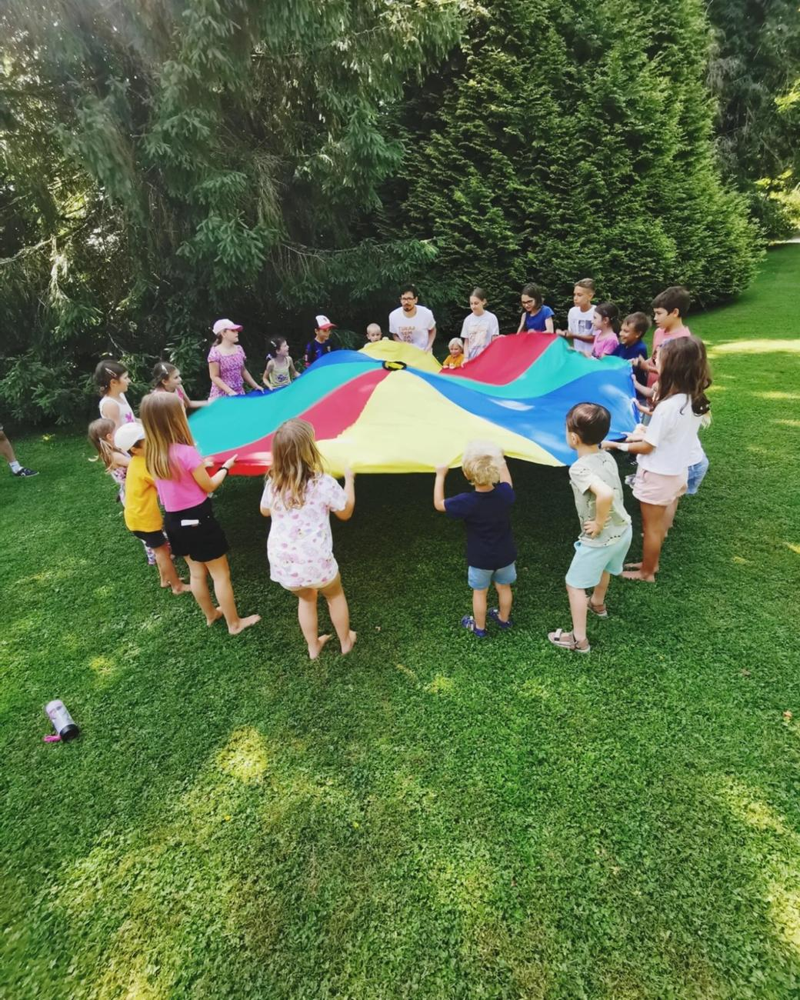
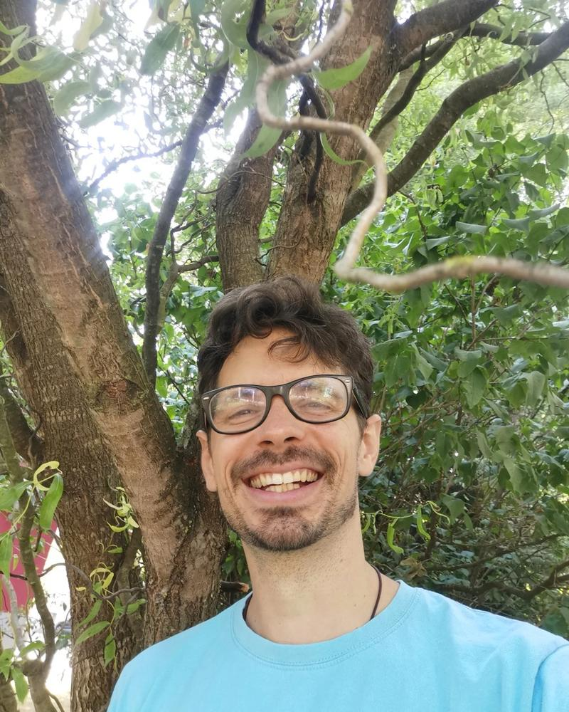
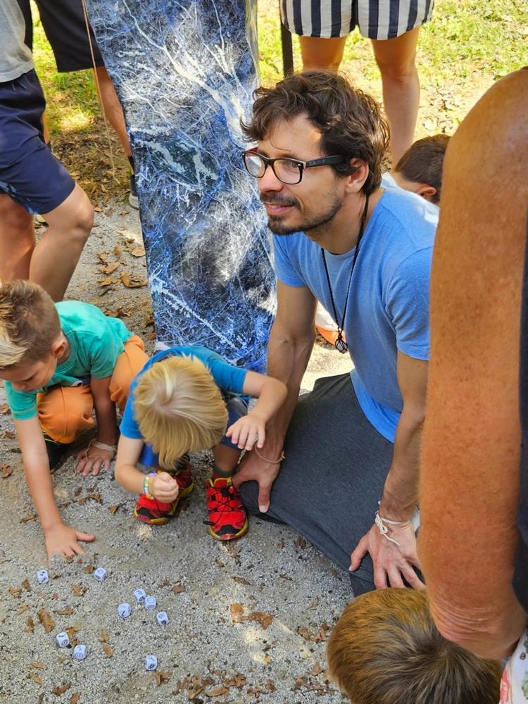
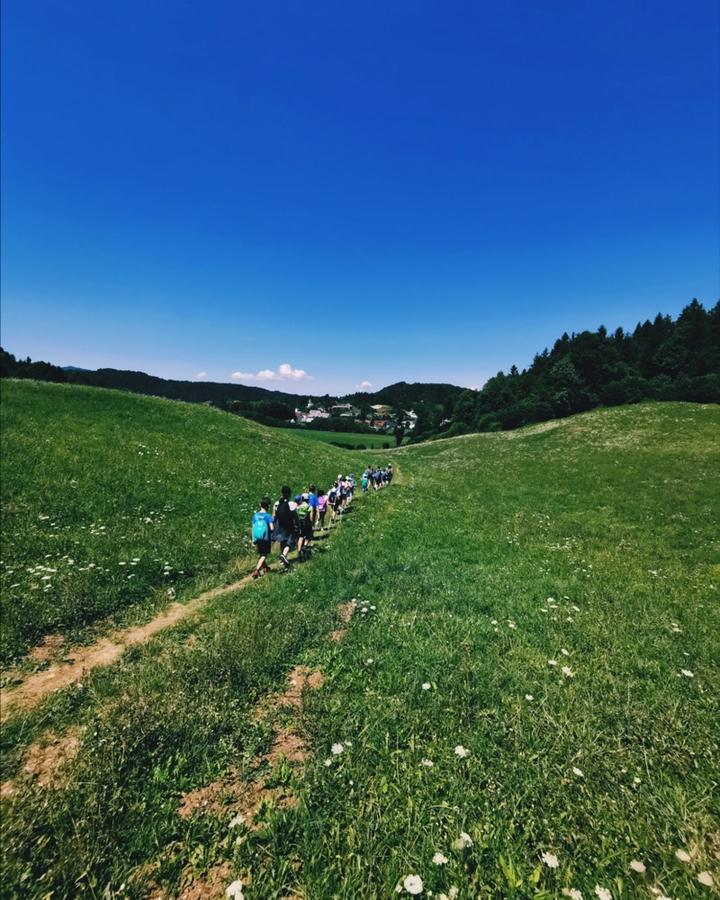
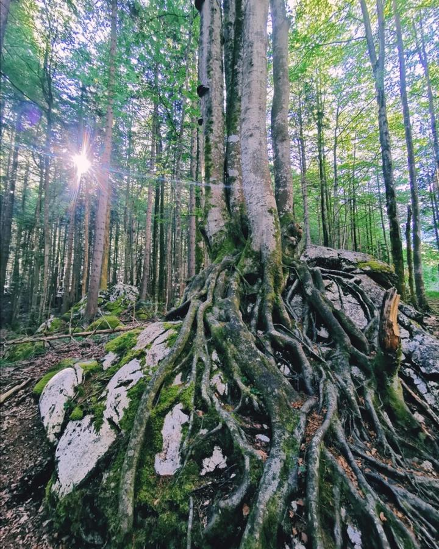
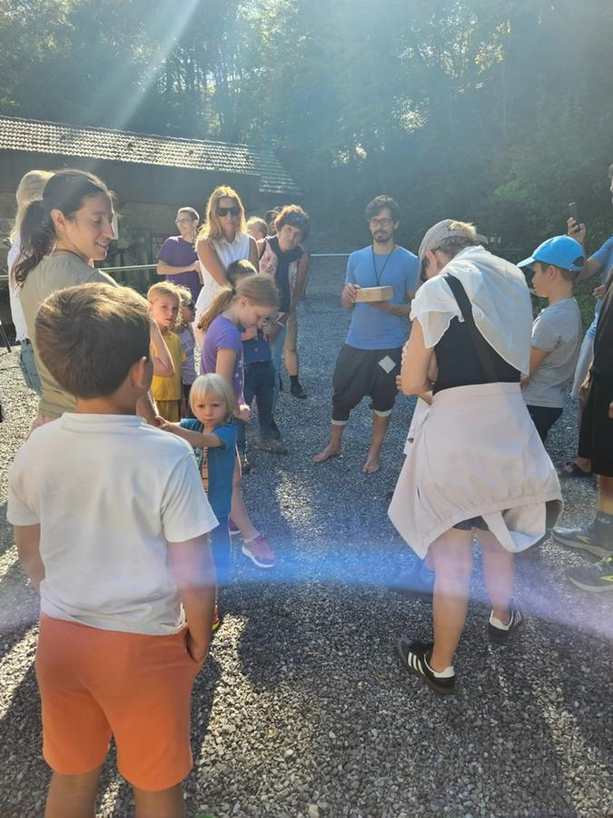
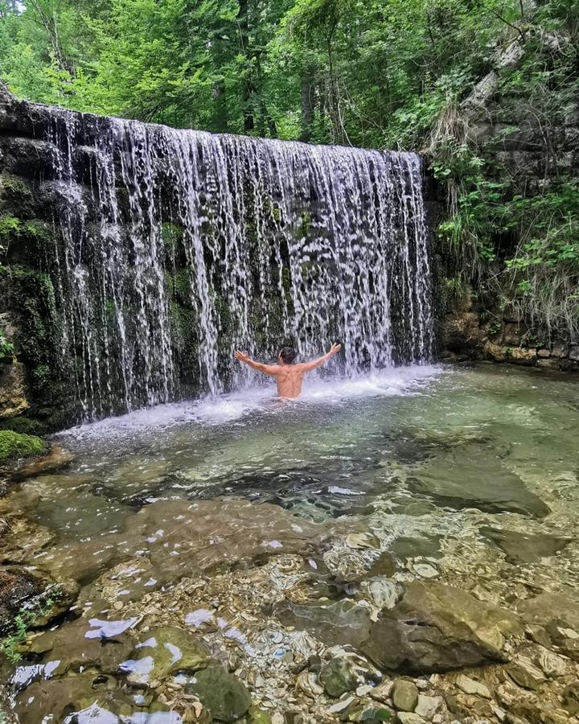
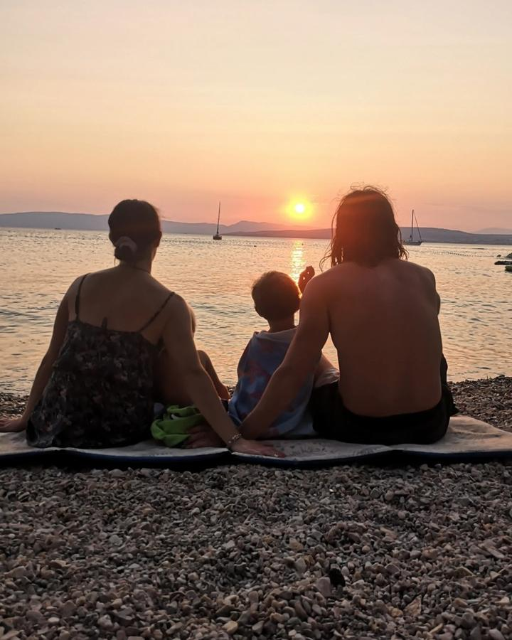
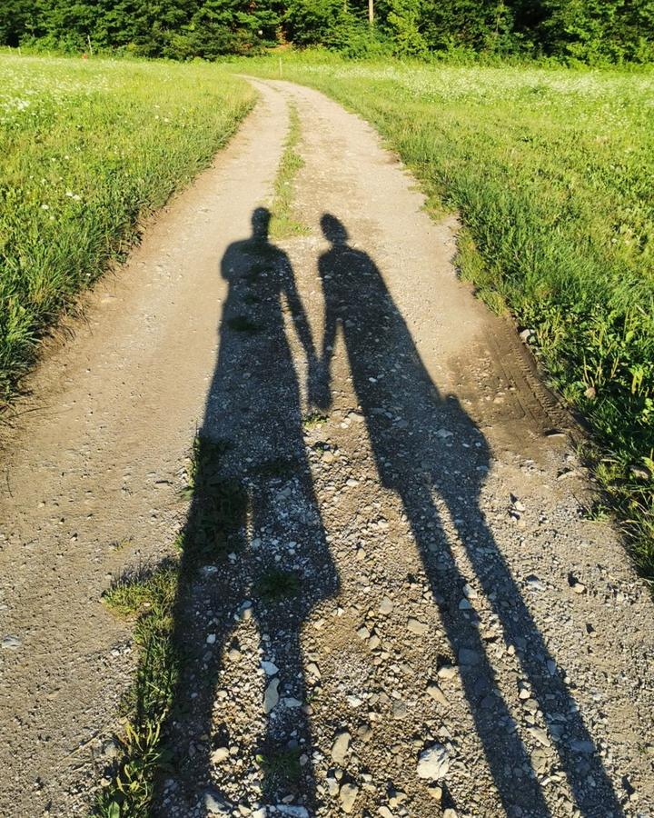
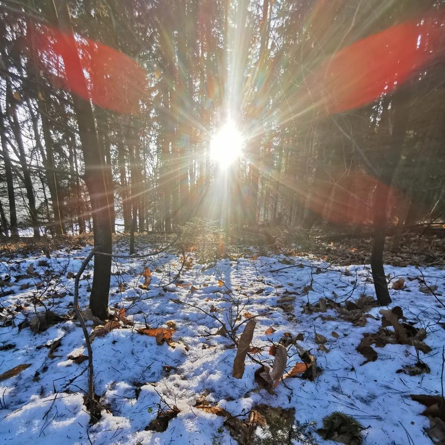

Anže Zagorc · Srčne kreacije
Življenje je igra. Igraj se življenje.
Zavestne aktivnosti za družine, otroke in odrasle: v naravi, s smehom, pravljicami, glasbo in kristali. Doživetja, ki rišejo nasmehe in grejejo srce.
Lov za kristali · Kristalni rojstni dan · Poletje v Logatcu · Srčni preboj · Celestial Inspiration
Kaj pripravljam
Skoči na svoje polje
Vsako polje je ena srčna kreacija. Prva štiri so za družine in otroke, naslednja tri za odrasle. Kristal je tvoj kamenček: kam ga vržeš?

O meni
Šepetalec družinam
Sem Anže Zagorc. Vrsto let delujem z otroki: kot učitelj, vzgojitelj, animator in starš. Otroci so moji veliki učitelji. Najdejo radost v skoraj vsaki stvari in izziv sprejmejo kot igro.
Iz te ljubezni so se zlile Srčne kreacije: Lov za kristali, Kristalni rojstni dan, Počitniško doživetje in prvi Kristalni tabor v Sloveniji. Za odrasle pripravljam dogodke Srčni preboj in kanaliziranje Celestial Inspiration. Kanalizirano meditacijo prakticiram vsak dan že skoraj štiri leta.
Obožujem sončne vzhode in zahode, naravo, smeh, kristale, glasbo, ptice, ustvarjanje in svojo družino. Moja namera je, da je vsaka kreacija v največji lahkotnosti, ljubezni in igrivosti.
»S teboj skuham rešitev.«
- 1100+udeležencev Lova za kristali
- 200+družin, ki so se nam pridružile
- 25+krajev po vsej Sloveniji
- 77+otrok na Počitniškem doživetju 2025
Igraj se življenje
Otroci nas spominjajo, da se igramo življenje
Kdaj si se nazadnje guncal ali guncala? Naj tvoj notranji otrok spregovori.
Podrsaj za več videov
-
GugalnicaNikoli nisi prestar, da bi se igral. -
Jutranja melodijaNaj te objame melodija življenja. -
Lov za kristaliUtrinek s festivala Guardians.
Misli za navdih
Misel, ki lahko nekaj premakne
Živi to, kar deliš. Deli to, kar živiš. Živi sebe.

Ko želiš priti nekam, kjer še nisi bil, boš tja prišel po poti, kjer še nisi hodil.
Tišina je zelo bogata. Vstopi vanjo in odkrij njene blagoslove.
Preživi čas z ljudmi, ki jih imaš najraje. To vključuje tudi tebe.
Življenje je lepo, če ga živiš. Lahko je še lepše, če ga s svojo čarobnostjo obogatiš.
Budno in prisotno stopaj skozi svoje življenje. Ne zaspi v svoji preteklosti.
Utrinki
Narava, smeh in iskrice v očeh








Kontakt
Če te kliče, da se srečamo
Pokliči, piši ali se prijavi na izbrani program. Z veseljem odgovorim na vsako vprašanje.
Prijave
- Lov za kristali za družine
- Kristalni rojstni dan povpraševanje
- Srčni preboj za odrasle
- Celestial Inspiration za odrasle
Za Počitniško doživetje, Kristalni tabor in Kristalni tretma me pokliči ali mi piši.